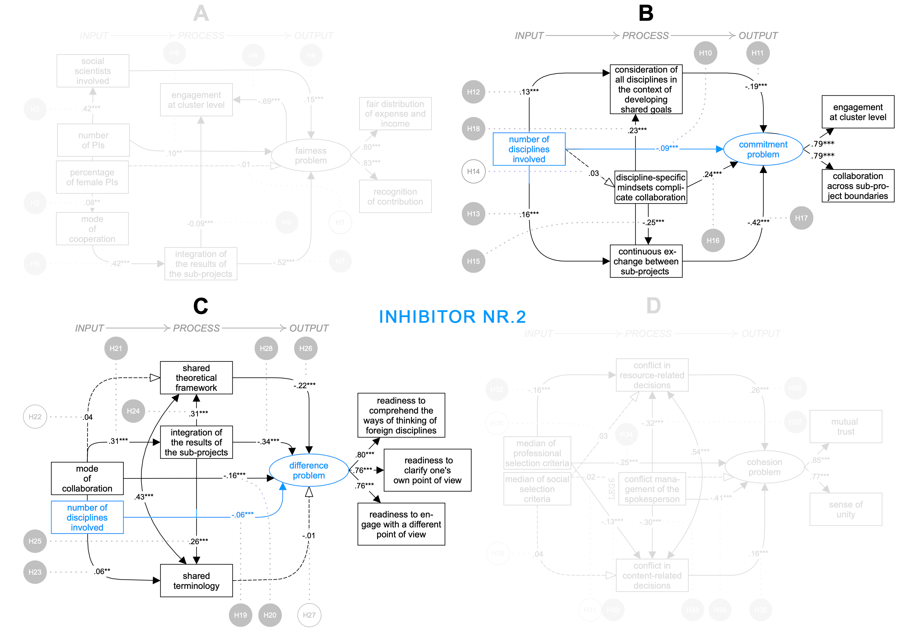

Probleme und Erfolgsdeterminanten
Entwicklung, Definition, Triebkräfte und Herausforderungen von Forschungskooperationen
Desiderate der Kooperationsforschung
Fragestellung(-en) der Dissertation
Zentrale Forschungsergebnisse und Thesen der Dissertation
Zusammenfassung und Fazit
uneinheitliche Verwendung des Begriffs der (Forschungs-)Kooperation (Bukvova, 2010)
häufig verwendete Definition:
«Kooperation ist ein Zusammenhang von Handlungen mehrerer Akteure, die in funktioneller Hinsicht auf die Erreichung eines Kooperationszieles hin koordiniert werden, das den Zielen oder Interessen der Akteure entspricht. (Laudel, 1999, S. 32)»
auf verschiedenen Ebenen des Wissenschaftssystems verortbar:
Makroebene:
Innovationsförderung
Effizienzsteigerung
Abbau disziplinärer Versäulung
Bearbeitung
komplexer Probleme
Mesoebene:
Drittmittel
Forschungs-infrastrukturen
(inter-)nationale Vernetzung / Sichtbarkeit
Steigerung wissenschaftlicher Exzellenz
Mikroebene:
Drittmittel
wissenschaftliche Innovation
Qualität / Quantität des Outputs
(inter-)nationale Sichtbarkeit
Reputation
Karriereverlauf
Etablierungsphase
Durchführungsphase
Abschlussphase
Etablierungsphase
Ziele und Fragen:
epistemische Leitplanke
organisationaler Fixpunkt
geteilt, klar, realistisch, konkret und flexibel verfasst
Durchführungsphase
epistemisches Fundament:
Verständigung
Vernetzung
Abschlussphase
Synthese:
wenig evidenzbasierte Erkenntnisse:
Kooperationsförmige Forschung…
«[…]lässt sich demnach gleichzeitig als over-theorized and under-researched bezeichnen. (Hollaender, 2003, S. 7)»
Teilfrage 1: Unter welchen Bedingungen entstehen Kooperationsprobleme?
Teilfrage 1: Unter welchen Bedingungen entstehen Kooperationsprobleme?
Teilfrage 2: Welchen Einfluss üben auftretende Kooperationsprobleme wechselseitig aufeinander aus?
Teilfrage 1: Unter welchen Bedingungen entstehen Kooperationsprobleme?
Teilfrage 2: Welchen Einfluss üben auftretende Kooperationsprobleme wechselseitig aufeinander aus?
Teilfrage 3: Welchen Einfluss üben Kooperationsprobleme auf den Erfolg von Forschungsverbünden aus?
Teilfrage 1: Unter welchen Bedingungen entstehen Kooperationsprobleme?
Teilfrage 2: Welchen Einfluss üben auftretende Kooperationsprobleme wechselseitig aufeinander aus?
Teilfrage 3: Welchen Einfluss üben Kooperationsprobleme auf den Erfolg von Forschungsverbünden aus?
Teilfrage 4: Unter welchen Bedingungen sind Forschungskooperationen erfolgreich?
Teilfrage 1: Unter welchen Bedingungen entstehen Kooperationsprobleme?
Teilfrage 2: Welchen Einfluss üben auftretende Kooperationsprobleme wechselseitig aufeinander aus?
Teilfrage 3: Welchen Einfluss üben Kooperationsprobleme auf den Erfolg von Forschungsverbünden aus?
Teilfrage 4: Unter welchen Bedingungen sind Forschungskooperationen erfolgreich?
Teilfrage 5: Bestehen systematische, individuelle und verbundweite Differenzen in der Intensität des Auftretens von Kooperationsproblemen?
Hintergrund: Sieben zentrale Kooperationsprobleme:
Fairness-
probleme
¬¨ü§ù
Commitment-
probleme
¬¨üí™
Differenz-
probleme
¬¨üí¨
Beziehungs-
probleme
¬¨üíö
Sicherheits-
probleme
¬¨üìÖ
Management-
probleme
¬¨üíº
Kommunik.-
probleme
¬¨üìû
Diese Kooperationsprobleme:
sind nur theoretisch zu differenzieren
überlappen einander
sind korreliert
(Meißner et al., 2022).
¬¨ü§ù‚áü홂áüí¨‚áüíö‚áî
¬¨üìÖ‚áüíº‚áüìû
Teilfrage 1: Unter welchen Bedingungen entstehen Kooperationsprobleme?
Teilfrage 1: Unter welchen Bedingungen entstehen Kooperationsprobleme?
These 1: Kooperationsprobleme werden durch jeweils fünf Promotoren und Inhibitoren gefördert bzw. reduziert (Hückstädt & Leisten, 2023).

Teilfrage 2: Welchen Einfluss üben auftretende Kooperationsprobleme wechselseitig aufeinander aus?
Teilfrage 2: Welchen Einfluss üben auftretende Kooperationsprobleme wechselseitig aufeinander aus?
Teilfrage 3:Welchen Einfluss üben Kooperationsprobleme auf den Erfolg von Forschungsverbünden aus?
Teilfrage 2: Welchen Einfluss üben auftretende Kooperationsprobleme wechselseitig aufeinander aus?
Teilfrage 3:Welchen Einfluss üben Kooperationsprobleme auf den Erfolg von Forschungsverbünden aus?
These 2: Für die Interrelationen und Effekte von Kooperationsproblemen ist die soziale Kohäsion eines Forschungsverbundes entscheidend (Hückstädt, 2022).
Teilfrage 4: Unter welchen Bedingungen sind Forschungskooperationen erfolgreich?
Teilfrage 4: Unter welchen Bedingungen sind Forschungskooperationen erfolgreich?
These 3: Realistische, klare und geteilte Ziele sind das Fundament eines erfolgreichen Forschungsverbundes (Hückstädt, 2023).
Teilfrage 5: Bestehen systematische, individuelle und verbundweite Differenzen in der Intensität des Auftretens von Kooperationsproblemen?
Teilfrage 5: Bestehen systematische, individuelle und verbundweite Differenzen in der Intensität des Auftretens von Kooperationsproblemen?
These 4:Kooperationsprobleme treten selten in erheblichem Ausmaß auf (Weinmann et al., 2023).
Teilfrage 5: Bestehen systematische, individuelle und verbundweite Differenzen in der Intensität des Auftretens von Kooperationsproblemen?
These 4:Kooperationsprobleme treten selten in erheblichem Ausmaß auf (Weinmann et al., 2023).
These 5:Kooperationsprobleme treten unabhängig von der Verfasstheit der Forschungsverbünde oder spezifischen Merkmalen ihrer Mitglieder auf (Weinmann et al., 2023).
Wir haben gesehen:
Die meisten Forschungsteams sind «happy ones»
(Bozeman & Youtie, 2017; Weinmann et al., 2023).
Dabei gilt:
Es müssen verschiedene Faktoren gegeben sein, damit eine Kooperation erfolgreich ist (Hückstädt, 2023).
Das Fehlen eines einzelnen Faktors kann andersherum zum Scheitern führen (Hückstädt, 2023).
Insofern bestätigen unsere Datenanalysen das «Anna-Karenina-Prinzip der Forschungskooperation (Bozeman & Youtie, 2017)»:
Insofern bestätigen unsere Datenanalysen das «Anna-Karenina-Prinzip der Forschungskooperation (Bozeman & Youtie, 2017)»:
«Alle glücklichen Forschungsteams gleichen einander, jedes unglückliche Forschungsteam ist auf seine eigene Weise unglücklich.»
ARB6==3:-0.01:
Hannover, 08.06.2023 | Forschungskooperationen – Probleme und Erfolgsdeterminanten